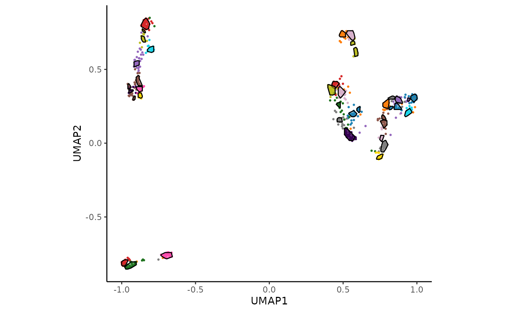

Introduction
HPAclusteR is an R package designed by the Human Protein
Atlas to streamline the process of gene clustering from transcriptomics
data. It provides a modular pipeline for performing PCA, calculating
distances, constructing shared nearest neighbor (SNN) graphs, consensus
clustering, UMAP, functional annotation, and different publication-ready
visualizations. The package is designed to work with AnnDatR objects, making
it easy to integrate into workflows for transcriptomics data
analysis.
💡 This vignette demonstrates the step-by-step usage of the
HPAclusteRpipeline. For users who prefer simplicity, thehc_auto_cluster()function can be used to run the entire pipeline in one call.
Getting Started
To begin, load the HPAclusteR package:
We will use the built-in example_adata dataset for this
vignette. This dataset is a toy example designed to demonstrate the
functionality of the package.
Step 1: Principal Component Analysis (PCA)
PCA is the first step in the pipeline, used to reduce the dimensionality of the data while retaining the most important features.
adata_res <- hc_pca(example_adata, components = 40)
head(adata_res$obsm$X_pca[, 1:5]) # PCA scores
#> PC1 PC2 PC3 PC4 PC5
#> ENSG00000000003 -1.713294 -0.7453333 0.1351569 5.1394086 3.1735990
#> ENSG00000000005 -1.091986 -0.4881315 2.9284178 0.5245912 1.4320086
#> ENSG00000000419 -5.870961 0.2891795 3.8167839 -1.2914071 -1.6238573
#> ENSG00000000457 -6.965664 0.7511346 1.5895928 0.6542449 0.8220386
#> ENSG00000000460 -4.731241 2.8348346 -3.2231099 -3.2112861 2.1560014
#> ENSG00000000938 -1.789129 -3.3794566 -3.2752532 -2.5991830 -2.8374182
adata_res$uns$pca # Explained variance
#> svd calculated PCA
#> Importance of component(s):
#> PC1 PC2 PC3 PC4 PC5 PC6 PC7 PC8
#> R2 0.189 0.109 0.08406 0.07247 0.06346 0.05727 0.03971 0.03441
#> Cumulative R2 0.189 0.298 0.38207 0.45454 0.51800 0.57527 0.61498 0.64939
#> PC9 PC10 PC11 PC12 PC13 PC14 PC15 PC16
#> R2 0.02798 0.02572 0.02091 0.01806 0.01683 0.0150 0.01397 0.0130
#> Cumulative R2 0.67737 0.70309 0.72400 0.74206 0.75889 0.7739 0.78786 0.8009
#> PC17 PC18 PC19 PC20 PC21 PC22 PC23 PC24
#> R2 0.01181 0.01084 0.01074 0.01036 0.01017 0.00892 0.00883 0.00788
#> Cumulative R2 0.81267 0.82351 0.83425 0.84461 0.85478 0.86370 0.87253 0.88041
#> PC25 PC26 PC27 PC28 PC29 PC30 PC31 PC32
#> R2 0.0075 0.00735 0.00704 0.00611 0.00608 0.00541 0.00505 0.00477
#> Cumulative R2 0.8879 0.89526 0.90230 0.90841 0.91449 0.91990 0.92495 0.92972
#> PC33 PC34 PC35 PC36 PC37 PC38 PC39 PC40
#> R2 0.00452 0.00433 0.00415 0.0041 0.00356 0.00324 0.00303 0.00302
#> Cumulative R2 0.93424 0.93857 0.94272 0.9468 0.95038 0.95362 0.95665 0.95967
#> 78 Variables
#> 1000 Samples
#> 0 NAs ( 0 %)
#> 40 Calculated component(s)
#> Data was mean centered before running PCA
#> Data was NOT scaled before running PCA
#> Scores structure:
#> [1] 1000 40
#> Loadings structure:
#> [1] 78 40The PCA step reduces the dimensionality of the data to 40 components, which can be adjusted based on the dataset and analysis goals.
Step 2: Distance Calculation
Next, we calculate the pairwise distances between samples using the
PCA-reduced data. The hc_distance() function supports
multiple distance metrics, such as “euclidean” and “spearman”. We will
use the number of components determined by Kaiser’s rule.
adata_res <- hc_distance(
adata_res,
components = hc_kaisers_rule(adata_res),
method = "spearman"
)
#> [1] "Kaiser's rule is above 80% variation. Success"
head(adata_res$uns$distance)
#> [1] 0.7411765 0.7647059 0.8117647 1.0264706 1.0794118 0.4500000Step 3: Shared Nearest Neighbor (SNN) Graph Construction
The SNN graph is constructed to identify clusters of similar samples. This step uses the distance matrix calculated in the previous step.
adata_res <- hc_snn(adata_res, neighbors = 15, prune = 1 / 15)
adata_res$uns$neighbors$snn
#> A Graph object containing 1000 cellsThe neighbors parameter controls the number of nearest
neighbors considered, while prune adjusts the sparsity of
the graph.
Step 4: Consensus Clustering
Consensus clustering is performed to identify robust clusters in the data. This step aggregates clustering results from multiple runs, in this case 100.
adata_res <- hc_cluster_consensus(
adata_res,
resolution = 6,
method = "louvain",
n_seeds = 100
)
head(adata_res$obs$cluster)
#> [1] "23" "23" "24" "35" "22" "18"The resolution parameter controls the granularity of the
clustering. Higher values result in more clusters.
Step 5: UMAP Visualization
UMAP is used to visualize the clusters in a low-dimensional space. This step provides an intuitive way to explore the clustering results. It uses the constructed SNN graph.
adata_res <- hc_umap(adata_res, verbose = FALSE)
head(adata_res$obsm$X_umap)
#> UMAP_1 UMAP_2
#> ENSG00000000003 -0.74314817 0.66219821
#> ENSG00000000005 -0.75341548 0.78221657
#> ENSG00000000419 -0.04688038 0.08189667
#> ENSG00000000457 -0.17320696 -0.12398653
#> ENSG00000000460 0.07012803 -0.61453598
#> ENSG00000000938 -0.72104249 -0.79464817Step 6: Cluster Hulls (Optional)
Cluster hulls are calculated to visualize the boundaries of each cluster in the UMAP plot.
adata_res <- hc_cluster_hulls(adata_res, poly_smoothing = 4, relative_bandwidth = 1/40)
#> Warning: There was 1 warning in `dplyr::mutate()`.
#> ℹ In argument: `density_data = lapply(...)`.
#> ℹ In group 1: `cluster = "1"`, `sub_cluster = 1`, `sub_type = "primary"`.
#> Caused by warning:
#> ! The `x` argument of `as_tibble.matrix()` must have unique column names if
#> `.name_repair` is omitted as of tibble 2.0.0.
#> ℹ Using compatibility `.name_repair`.
#> ℹ The deprecated feature was likely used in the HPAclusteR package.
#> Please report the issue at
#> <https://github.com/buenoalvezm/HPAclusteR/issues>.
head(adata_res$uns$UMAP_hulls$hulls)
#> # A tibble: 6 × 7
#> cluster sub_cluster sub_type landmass X Y polygon_id
#> <chr> <dbl> <chr> <dbl> <dbl> <dbl> <chr>
#> 1 23 1 primary 1 -0.920 0.721 23_1_1
#> 2 23 1 primary 1 -0.933 0.747 23_1_1
#> 3 23 1 primary 1 -0.933 0.753 23_1_1
#> 4 23 1 primary 1 -0.927 0.766 23_1_1
#> 5 23 1 primary 1 -0.920 0.773 23_1_1
#> 6 23 1 primary 1 -0.901 0.792 23_1_1Step 7: Visualization
Finally, we visualize the UMAP plot with clusters and hulls using the
hc_plot_umap() function.
hc_plot_umap(adata_res, plot = "both")
#> Warning: The `size` argument of `element_line()` is deprecated as of ggplot2 3.4.0.
#> ℹ Please use the `linewidth` argument instead.
#> ℹ The deprecated feature was likely used in the HPAclusteR package.
#> Please report the issue at
#> <https://github.com/buenoalvezm/HPAclusteR/issues>.
#> This warning is displayed once every 8 hours.
#> Call `lifecycle::last_lifecycle_warnings()` to see where this warning was
#> generated.
The plot argument can be set to "points",
"hulls", or "both" to customize the
visualization.